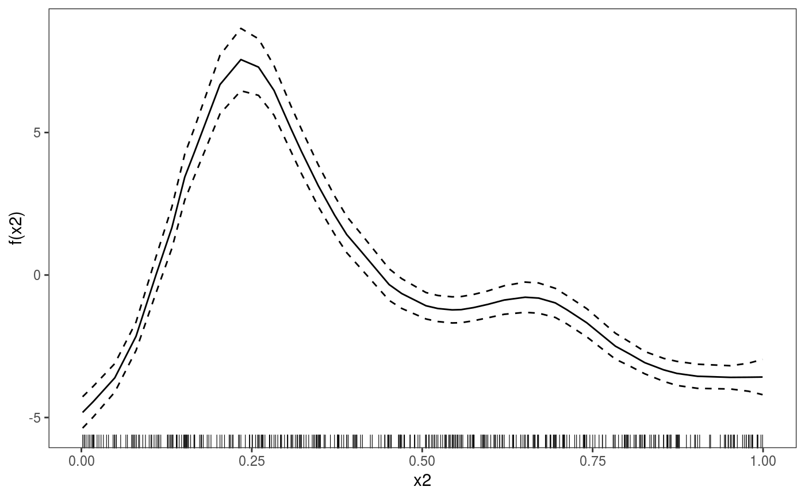

Create Accumulated Local Effects (ALE) for GAMs
# S3 method for gam ALE(o, x, newdata = NULL, type = "link", nbin = 40, oind = 1, center = 1, ...)
| o | a fitted GAM model. |
|---|---|
| x | the name of the variable along which we want to produce the ALE effect. |
| newdata | optional argument indicating the data to be used to produce the ALE effect.
If |
| type | if set to "link" (the default option) the model output will be the linear predictor, if set to "response" the model output is on the scale of the response. |
| nbin | number of intervals into which the predictor range is divided when calculating the ALE effects. |
| oind | relevant only when the model |
| center | if set to 0 the ALE effect is not centered and the effect is equal to zero at the smallest value on x-grid. If set to 1 (default) the effect is centered as done in Apley and Zhu, 2016. That is, an estimate of the expected value of the uncentered effect is subtracted, so the effect is centered similarly to smooth effects in GAMs. If set to 2, the expected value of the model output at the smallest value on the x-grid is added to the uncentered effect. |
| ... | extra arguments that will be passed to |
An object of class ALEXD, where X is the number of dimensions, which can be plotted
using plot.ALEXD (only X=1 is provided at the moment).
Apley, D.W., and Zhu, J, 2016. Visualizing the effects of predictor variables in black box supervised learning models. arXiv preprint arXiv:1612.08468.
# Example using Tweedie distribution library(mgcViz) set.seed(3) n<-400 ## Simulate data... dat <- gamSim(1,n=n,dist="poisson",scale=.2)#> Gu & Wahba 4 term additive modeldat$y <- rTweedie(exp(dat$f),p=1.3,phi=.5) ## Tweedie response ## Fit a fixed p Tweedie, with wrong link ... b <- gam(list(y~s(x0)+s(x1)+s(x2)+s(x3),~1,~1), family=twlss(), data=dat) plot(ALE(b, "x2", type = "response", oind = 1))